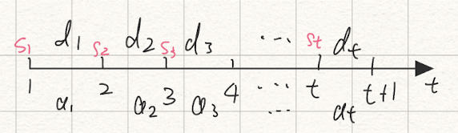

Dynamic Programming Pt.2
Lot Sizing / Generalized Inventory Problem
Scenario. Keeping inventory
Going back to the coffee shop example: A coffee shop needs to decide how much coffee beans to purchase and how frequently should they purchase. Now suppose we also own a roastery with a bunch of roasters, where we can roast our own coffee beans.
Variables
- t
- Time period
- d_t
- Demand at time t
- s_t
- Inventory at the start of period t
- a_t
- Production amount at period t
- b
- Unit production cost
- h
- Unit holding cost
- K
- Fixed cost for starting production
- c(a_t)
- Production cost function
c(a_t) = \begin{cases}
0 & \text{if }a_t = 0\\
K + b\cdot a_t & \text{if }a_t > 0
\end{cases}Note that “period” is the interval between each timestamp

Stage, State, Value Function
- Stage
- Time t = 1, 2\dots, T
- State
- Inventory s_t
- Value function
- v_t(s_t), the minimum cost from time t to T with initial inventory s_t
- Action
- a_t, the production amount
The optimality equation is:
v_t(s_t) =\min_{a_t}\{c(a_t) + h\cdot(s_t + a_t - d_t) + v_{t+1}(s_t + a_t - d_t)\}with base cases:
v_{T+1}(s_{T+1}) = 0, \forall s_{T+1}Bounds
Suppose we only have M machines, then a_t is bounded by the number of machines
a_t\in\{0,1,\dots , M\}The inventory capacity could be capped at D, this bounds the state:
s_t\in\{0,1,\dots, D\}Properties of the Inventory Problem
Assuming unit costs b, h are independent of time t, we have:
Prop. Don’t produce if we have inventory
a_t > 0\implies s_t = 0
If it is optimal to produce during any time period t, then the starting inventory is 0
Prop. If we produce, produce enough to cover integer amount of time periods
If it is optimal to produce in stage t (so a_t > 0 for some t), then it is optimal to produce an amount that exactly covers the demand for t, t+1, \cdots, t+j for some 0\leqslant j\leqslant T-t.
Lemma. Equivalent optimality equation
Using the previous 2 properties, we only need to find the number of time periods j to cover when we produce. If we produce enough to cover j periods, we move to time t+j+1.
v_t = \min_{0\leqslant\, j\leqslant\, T-t}\{c_{t,t+j+1} + v_{t+j+1}\}where the transition cost c_{t, t+j+1} is:
c_{t,\,t+j+1} = K + h\sum^j_{i=1}\underbrace{i\cdot d_{t+i}}_{\substack{\text{need to keep the demand}\\\text{ amount in inventory}}}with base cases v_{T+1} = 0, s_1 = 0.
Stochastic Dynamic Programming
Markov Chain Review
Def. Discrete Time Markov Chain
A discrete, time homogeneous Markov chain on state space S with transition matrix P and initial distribution \alpha is a sequence of random states X_n\in S such that:
- \Bbb P(X_0 = i) = \alpha_i
Prop. Markov Property
\Bbb P(X_{t}= j\mid X_{t-1} = i) = \Bbb P(X_{t} = j\mid X_{t-1} = i, X_{t-2 } = i_{t-1}\dots)
The elements p_{ij} in P represents:
p_{ij} = \Bbb P(X_{t+1} = j\mid X_t = i)Def. Communicate
2 states i, j\in S communicates if they are accessible from each other.
i\lrarr j \coloneqq i\to j\text{ and }j \to iDef. Closed Subset
A subset of state space T\sub S is closed if any of the states in T is ever entered, the chain cannot leave T. In terms of transition probability:
P_{ij} =0\hskip1em\forall i\in T, j\notin TThe entire state space is always closed.
Prop. n step transition probability
It’s the i,j th entry in P^n.
\begin{aligned}
\Bbb P(X_n = j\mid X_0 = i) &= \Bbb P(X_{m+n}= j\mid X_m = i) \\&= P^n_{ij}
\end{aligned}Markov decision process with finite time
For this class we assume time t is finite, t = 0,1,2,\dots, N.
Variables
- s_t\in S
- State at time t
- a_t\in A
- Action at time t
- r_t(s_t, a_t)
- Reward function for the state, action pair at time t
- \Bbb P(s_{t+1}\mid s_t, a_t)
- Transition probability of actually going to state s_{t+1} given we took action a_t at state s_t.
- R(s_N) or r_N(s_N)
- Reward if we end on state s_N
Optimality Equation
Starting with the deterministic case, we want to see with action at time t maximizes / minimizes the reward.
v_t(s_t) = \underset{a_t\in A}{\max/\min}\,\{r_t(s_t, a_t) + v_{t+1}(s_{t+1})\}For the stochastic case, replace v_{t+1} with expected value, since it’s possible we might not get to the state s_{t+1}. The next state became a random variable:
v_t(s_t) = \underset{a_t\in A}{\max/\min}\,\Big\{r_t(s_t, a_t) + \Bbb E[v_{t+1}(s_{t+1})\mid s_t, a_t]\Big\}Expand with the definition of \Bbb E:
v_t(s_t) = \underset{a_t\in A}{\max/\min}\,\left\{r_t(s_t, a_t) + \sum_{s_{t+1}\in S}{\Bbb P}(s_{t+1}\mid s_t, a_t)\cdot v_{t+1}(s_{t+1})\right\}with base cases v_N(s_N) = R(s_N) for some final reward function R and each possible end state s_N\in S.
Decision Rule \small d_t
At each state s_t, we want to pick out an action a_t. There are 2 types of decision rules.
Markovian. d_t(s_t) returns an action by looking at current state.
History dependent. d_t(s_1,a_1\dots s_{t-1}, a_{t-1}, s_t) returns an action by looking at all past states and actions.
Def. Policy \pi, sample path \omega, total reward W
The decision rules at each stage
\pi = (d_1, d_2, \dots d_{N-1})Given a policy \pi, we automatically get a sample path \omega,
\omega= (s_1, a_1, s_2, a_2,\dots,s_{N-1}, a_{N-1}, s_N)The probability of the path happening is:
\Bbb P(\text{path} = \omega) \\= \Bbb P(X_1 = s_1)\cdot\Bbb P(X_2 = s_2\mid s_1, a_1)\cdots\Bbb P(X_N = s_N\mid s_{N-1, a_{N-1}})A sample path also has a total reward W,
W(\omega) = R
(s_N)+\sum_{i=1}^{N-1}r_i(s_i, a_i) Each s_i in the sum is a random variable, so the expected total reward is:
\Bbb E_{W,\pi}[W(\omega)] = \sum_{\text{all possible }\omega} \Bbb P(\text{path}=\omega) \cdot W(\omega)Example. Stochastic Shortest Paths
graph LR S --1--- A A --50--- C S --0--- B A --0---D C --1---F C --0 ---G D --120 ---G D --50 ---H B--30---D B--10---E E--2---H E--2---I
Let each layer of the graph be the state at t=0, t=1, t=2, t=3.
At each stage, we can choose to go up or down. Since it’s stochastic, there’s a transition probability. Define:
\begin{aligned}
\Bbb P(\text{actually go up}\mid \text{choose to go up}) &= p_u\\
\Bbb P(\text{actually go down}\mid \text{choose to go down}) &= p_d\\
\Bbb P(\text{actually go down}\mid \text{choose to go up}) &= 1-p_u\\
\Bbb P(\text{actually go up}\mid \text{choose to go down}) &= 1-p_d\\
\end{aligned}For the path \omega = \text{SACF}, the probablity is \Bbb P(\text{path} = \omega) = p_u^3 because we need to actually go up 3 times.
There are 2^3 possible sample paths (2 choice at each stage, 3 stages in total). Each path \omega_i has a reward W(\omega_i) and a probability \Bbb P(\omega_i).
So the expected reward is:
\Bbb E_{W\!,\pi}[W(\omega)] = \sum_{i=1}^{2^3}W(w_i)\cdot \Bbb P(\text{path} = \omega_i)Policy Backward Evaluation
For policy \pi, time t, define the value function:
v_{\pi, t}(s_t) = r_t(s_t, d_t(h_t)) + \sum_{j\in S}\Bbb P(j\mid s_t, d_t(h_t))\cdot v_{\pi, t+1}(h_t, d_t(h_t), j)- r_t
- reward function
- s_t
- current state
- d_t(h_t)
- returns action depending on the history
when we are in a Markov chain, we introduce random variables X_n, Y_n for s_t, d_t(h_t).
v_{t, \pi}(h_t) = \Bbb E[\sum^{N-1}_{n=t}r_n(X_n, Y_n) + r_N(X_N)]To find the best policy \pi^*, we max over all possible policies:
\begin{aligned}
v_t(h_t) &= \max_{\pi} v_{t,\pi}(h_t) \\
&= \max_{a_t}\{r_t(s_t, a_t) + \sum_{j\in S}\Bbb P(j\mid s_t, a_t) \cdot v_{t+1} (h_{t+1})\}\\
v_N(h_N)&= r_N(s_N)
\end{aligned}The best policy is essentially the tuple of all the best actions a_t at each stage t.
d_t^*(h_t) \in \argmax_{a_t}\{r_t(s_t, a_t) + \sum_{j\in S}\Bbb P(j\mid s_t, a_t) \cdot v_{t+1} (h_{t+1})\}Finally the optimal policy is \pi^* = (d_1^*, d_2^*,\dots, d_{N_1}^*)
Observation. Randomizing choices doesn't yield a better optimum
Given any value function \omega: W\to \R where W is a discrete set and some probability distribution \Bbb P over W.
Then the max value bounds the value of a random choice:
\max_{s\in W}\omega(s) \geqslant \sum_{s\in W}\Bbb P(s)\omega(s) = \Bbb E[\omega]Observation. Existence of optimal Markov decision rule
If history dependent value function only looks at the current state, then there will be an optimal Markov decision rule.